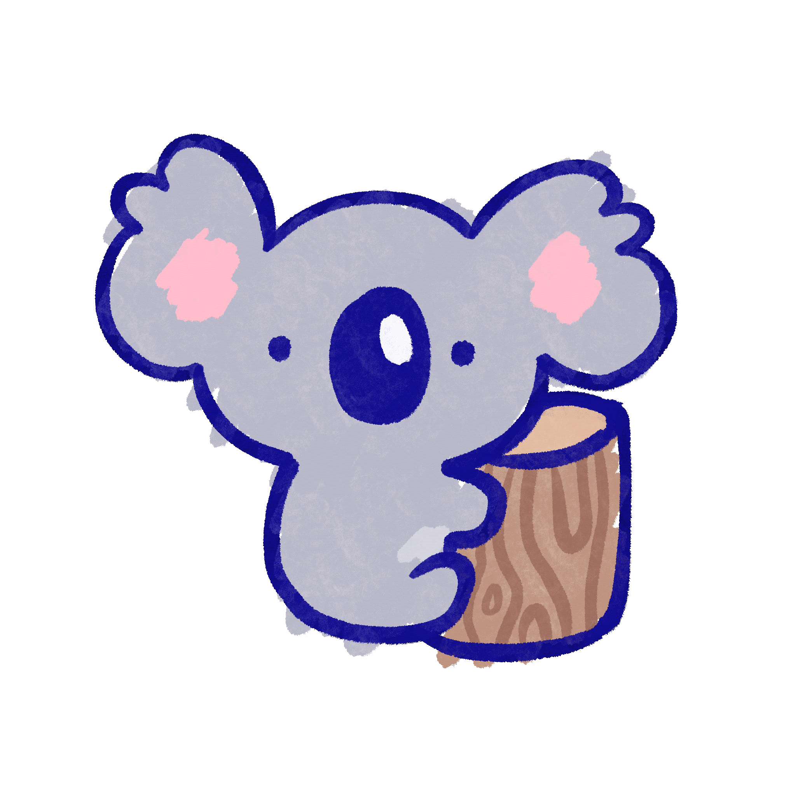

<html>
<head>
  <style>
    body {
      background-image: url("img/koala_bg.png");
      background-repeat: no-repeat;
      background-size: cover;
    }
   </style>
  </head>
</html>
<header>
</header>

<audio src="audio/background_music.mp3" autoplay loop></audio>


<div style="position: relative;">
  <h1 style="font-size: 50px; position: absolute; top: 1; left: 50; z-index: 1;">Koala is very happy!</h1>
  <p style="font-size: 28px; position: absolute; top: 130; left: 50; z-index: 1;">Eucalyptus leaves! Sweet eucalyptus leaves! They are so delicious! <br> Do you want to know why I love eating these leaves so much?</p>
   <p style="font-size: 28px; position: absolute; top: 210; left: 70; z-index: 1;"> Long ago my ancestor was a human boy and he drank up all the water in his clan. He was so thirsty that he couldn't stop himself.<br> Everyone became angry at him and they banished mhim to the trees where he learned to drink from the eucalyptus leaves and became a Koala. <br> 
    <p style="font-size: 28px; position: absolute; top: 360; left: 50; z-index: 1;"> Thanks for listening to my story, Here is a clue on where to find tadpole: 
       <br> What can’t walk but always runs, <br> And is filled with germs a ton, <br> I don’t know why tadpole resides there, <br> But towards the library it can stare. </p>

</div>

<footer>
   <p>Copyright © 2023
    <br>All rights reserved.</p>
</footer>
    